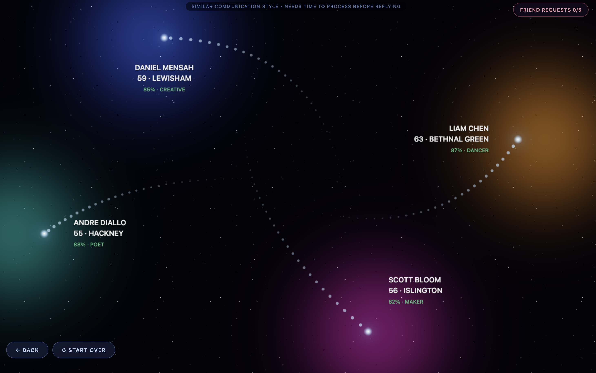
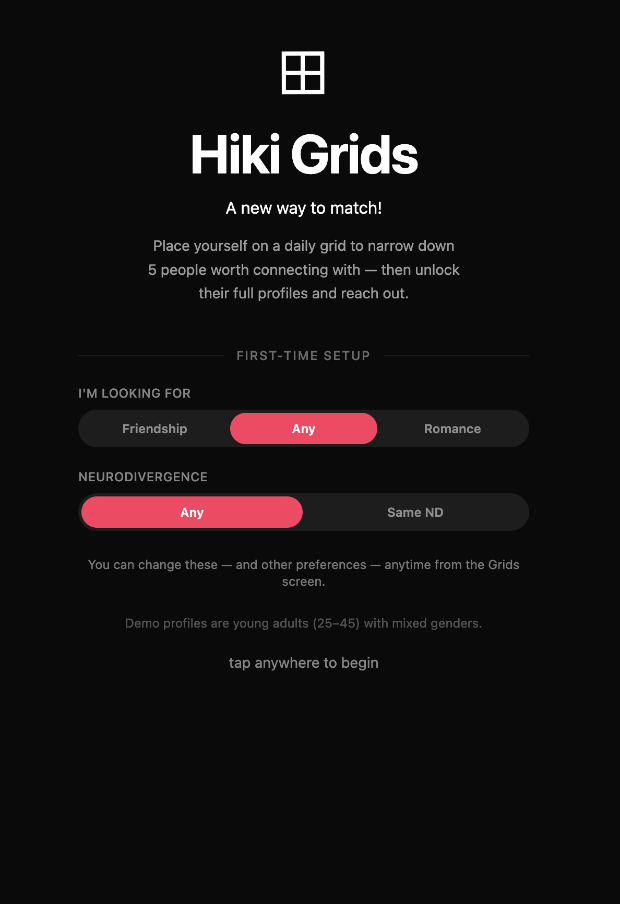

Project HIKI was our semester project for Advanced Human-Centered Design. We looked at how neurodivergent people meet friends and partners online, and after rounds of research, prototyping, and testing, we ended up with Hiki Grids, a daily matching feature built to replace swiping.

The Problem Space
We interviewed neurodivergent users about dating and friendship apps, and setting up a profile came up again and again. People said it felt like "commodifying myself," "curating myself," and "rendering myself purchasable for other people." Scrolling through endless faces and polished bios was overwhelming, and it left little room for anyone's actual personality.
The same people told us their best connections came from shared interests and from seeing someone over and over in low-pressure settings, which is how friendships usually form in real life. The way these apps match people worked against that.
Who We Designed For
Jamie is 20, has ADHD, and identifies as gay. He's used several dating apps and hates setting up a profile, because it feels like he's commodifying himself and making himself purchasable for others. He needs the way he presents himself and talks to people online to feel authentic. He wants online dating to feel less like a marketplace and more like meeting people in real life, where a relationship starts with spontaneity and curiosity.
We worked within a liberatory design framework, which kept us accountable to Jamie as a real person and led us to drop diagnostic language and frame the problem around friendship instead of disability.
Research & Insights
We sorted our interview notes into Say, Think, Do, and Feel, and a few patterns stood out.
- "I don't like setting up the profile." Onboarding itself was a problem.
- "I'm not just queer, it's one part of me." Labels flatten who someone is.
- "It always feels like a very permanent decision that I send a like or heart." Every swipe carries too much weight.
- Some people avoid the apps entirely because they're afraid of harassment or overstimulation.
- Friendships come easiest when you're young, before neurodivergent traits turn into social barriers, so an app for adults has to work harder to recreate that low-pressure setting.
Ideation
We ran a How Might We session around four questions: how to get rid of profile setup, make matching more spontaneous, make the experience feel safer, and connect people through interests instead of looks, and out of more than 50 ideas we picked two to prototype. Infinite Zoom came from infinite zoom art, and Hiki Grids borrowed the 2-by-2 grid, a design tool from our HCD class.
Infinite Zoom
Profiles nested inside each other like infinite zoom art, so you see more about someone the further you zoom in.
Hiki Grids
A 2-by-2 grid where you place yourself based on a daily prompt and see where everyone else landed.

Testing & Iteration
I built prototypes of both ideas, and we tested them with four users: Jamie, April, Cary, and Sheila, and three findings decided our direction.
"The Infinite Zoom feels like an aesthetic revolution of matching while Hiki Grids seems more of a fundamental deconstruction of the swipe." Testers leaned toward Hiki Grids, and one said it felt like "getting to see the back door of the algorithm."
People looking for friends and people looking for dates wanted different things. Some wanted someone similar, others were curious about opposites, and the grid let them choose.
"The swipe mechanism is old and repetitive." Testers liked getting a new prompt every day, and following someone's answers over time felt closer to getting to know them in person.
Final Design: Hiki Grids
Hiki Grids replaces the matching tab, and each day you get a new prompt and a 2x2 grid to place yourself on based on your answer. Then you see where everyone else placed themselves on the same grid, so there's no stack of faces to swipe through. If someone's answer catches your interest, you can open their icon profile, which has no photos and no label-heavy bio, and reach out.
Everyone you see is already filtered by age, location, sexual orientation, and whether they want friendship or romance. You can change those settings from the Grids screen anytime.

Try the Hiki Grids prototype Try the Infinite Zoom prototype View final presentation
You see a whole plane of people and how their answers compare to yours, with no one-by-one queue.
You learn a little more about someone each day, like an ongoing conversation.
No photos or identity labels up front, so you match because you're curious about someone's answers.
Age, location, sexuality, neurodivergent preferences, and friendship or romance are set from day one.
Lingering Questions
Our last round of testing left us with three open questions.
- Older testers wanted to be more intentional about who they met, so Hiki Grids may fit younger users best.
- One tester said, "Having prompts daily is good, but I would learn much more about a person by hearing WHY they placed themselves there." A short, optional explanation next to each answer could help.
- Another said learning a bit about someone each day "would feel like a nudge, as if you meet someone often and get to know them slowly." Keeping the grids going after two people match could carry that into the relationship.
My Role
I was one of three team members and the only engineer, so I built the Hiki Grids prototype and our other digital prototypes, including Infinite Zoom.
What I Took Away
I used to think designing for one specific community would narrow the design. Having Jamie to answer to did the opposite and made each decision easier to make. I also learned that accessibility has to be part of the core design, and for Hiki Grids it shaped how matching works.